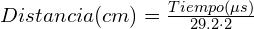
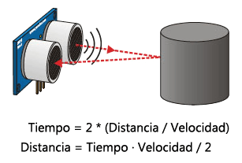

Sensor de ultrasonidos HC-SR04
Un sensor de ultrasonidos es un dispositivo para medir distancias. Su funcionamiento se base en el envío de un pulso de alta frecuencia, no audible por el ser humano. Este pulso rebota en los objetos cercanos y es reflejado hacia el sensor, que dispone de un micrófono adecuado para esa frecuencia.
Midiendo el tiempo entre pulsos, conociendo la velocidad del sonido, podemos estimar la distancia del objeto contra cuya superficie impacto el impulso de ultrasonidos
Los sensores de ultrasonidos son sensores baratos, y sencillos de usar. El rango de medición teórico del sensor HC-SR04 es de 2cm a 400 cm, con una resolución de 0.3 cm. En la práctica, sin embargo, el rango de medición real es mucho más limitado, en torno a 20 cm a 2 metros.
Los sensores de ultrasonidos son sensores de baja precisión. La orientación de la superficie a medir puede provocar que la onda se refleje, falseando la medición. Además, no resultan adecuados en entornos con gran número de objetos, dado que el sonido rebota en las superficies generando ecos y falsas mediciones. Tampoco son apropiados para el funcionamiento en el exterior y al aire libre.
Pese a esta baja precisión, que impide conocer con precisión la distancia a un objeto, los sensores de ultrasonidos son ampliamente empleados. En robótica es habitual montar uno o varios de estos sensores, por ejemplo, para detección de obstáculos, determinar la posición del robot, crear mapas de entorno, o resolver laberintos.
En aplicaciones en que se requiera una precisión superior en la medición de la distancia, suelen acompañarse de medidores de distancia por infrarrojos y sensores ópticos.
¿CÓMO FUNCIONA UN SENSOR DE ULTRASONIDOS?
El sensor se basa simplemente en medir el tiempo entre el envío y la recepción de un pulso sonoro. Sabemos que la velocidad del sonido es 343 m/s en condiciones de temperatura 20 ºC, 50% de humedad, presión atmosférica a nivel del mar. Transformando unidades resulta:

Es decir, el sonido tarda 29,2 microsegundos en recorrer un centímetro. Por tanto, podemos obtener la distancia a partir del tiempo entre la emisión y recepción del pulso mediante la siguiente ecuación.

El motivo de dividir por dos el tiempo (además de la velocidad del sonido en las unidades apropiadas, que hemos calculado antes) es porque hemos medido el tiempo que tarda el pulso en ir y volver, por lo que la distancia recorrida por el pulso es el doble de la que queremos medir.

APLICACIONES
Una aplicación cada vez más habitual de estos sensores es utilizarlos como sistema de aparcamiento en vehículos a motor. Lo habitual es que vayan instalados en la parte trasera, aunque cada vez más modelos los llevan también en la delantera.
Se suelen disponer varios sensores para que nos avisen de los obstáculos que podemos encontrar justo detrás o en los laterales, llegado el caso. Fíjate en la imagen:

Puedes obtener más información técnica en este enlace.